Ein weiteres meiner Hobbies ist die Fotografie. Es handelt sich um Amateurfotografie. Wie man anhand der Bilder gut erkennen kann, mag ich Makroaufnahmen. Ich benutze eine Canon EOS 1000D. Ich habe zwei Objektive:
- EFS 18-55mm
- Canon Zoom Lens EF 75-300mm 1:4-5.6 III
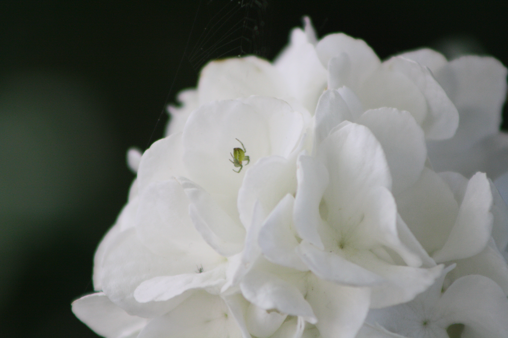
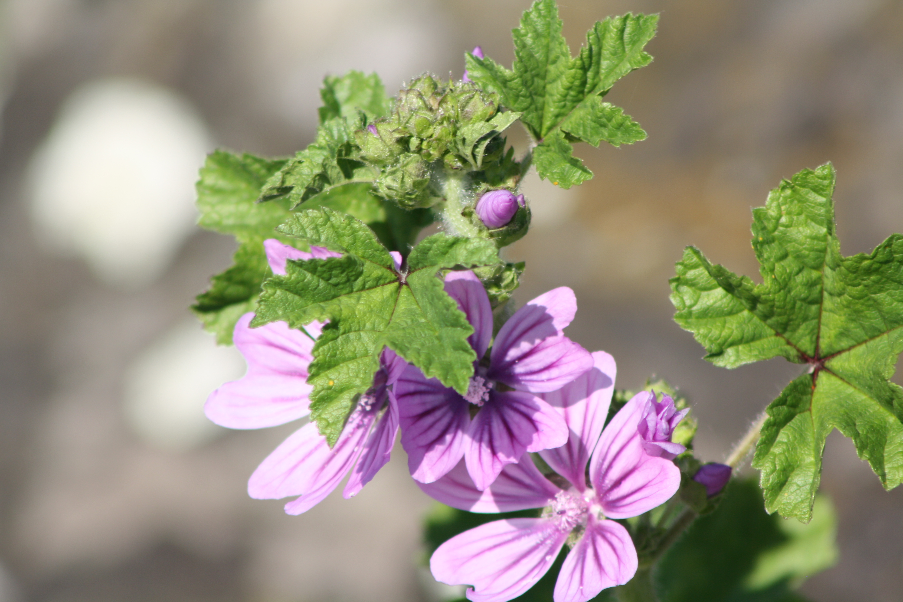
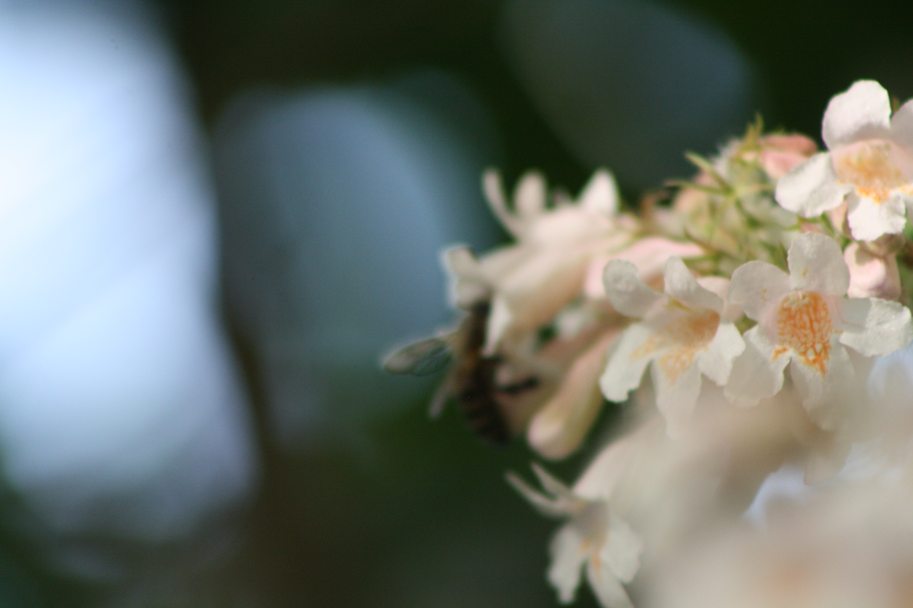
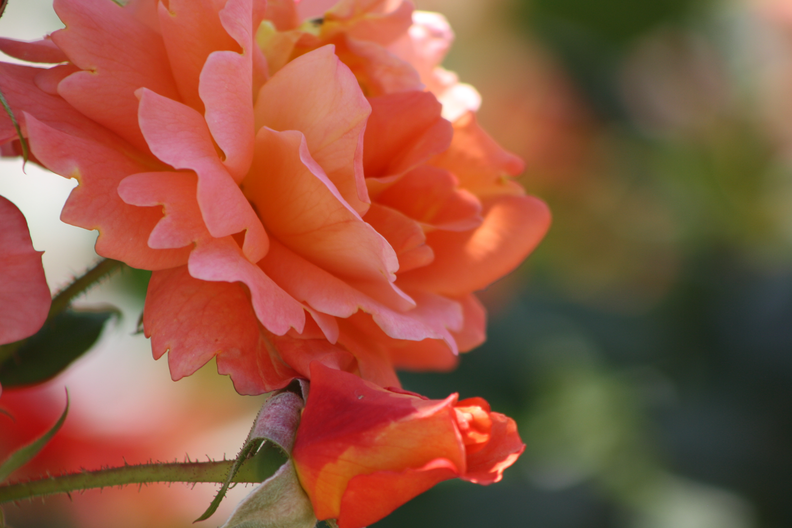
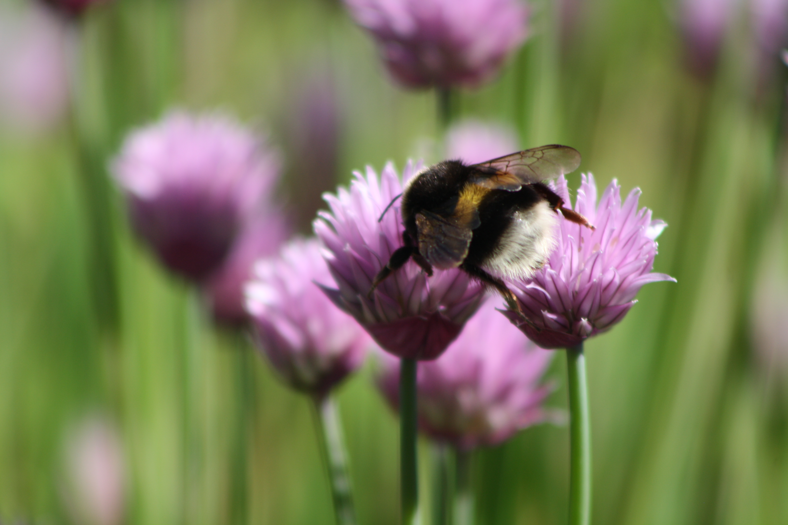
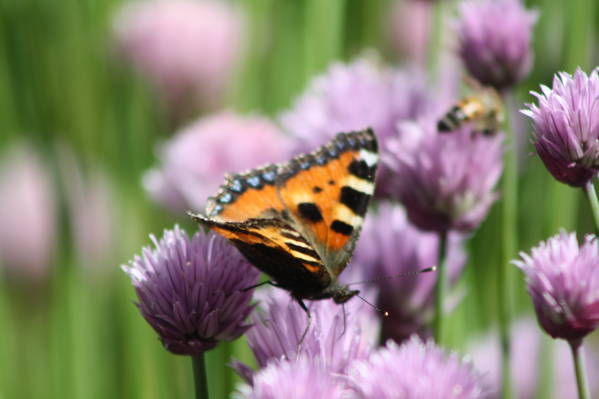
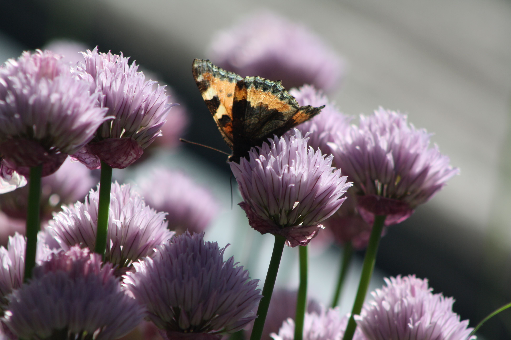
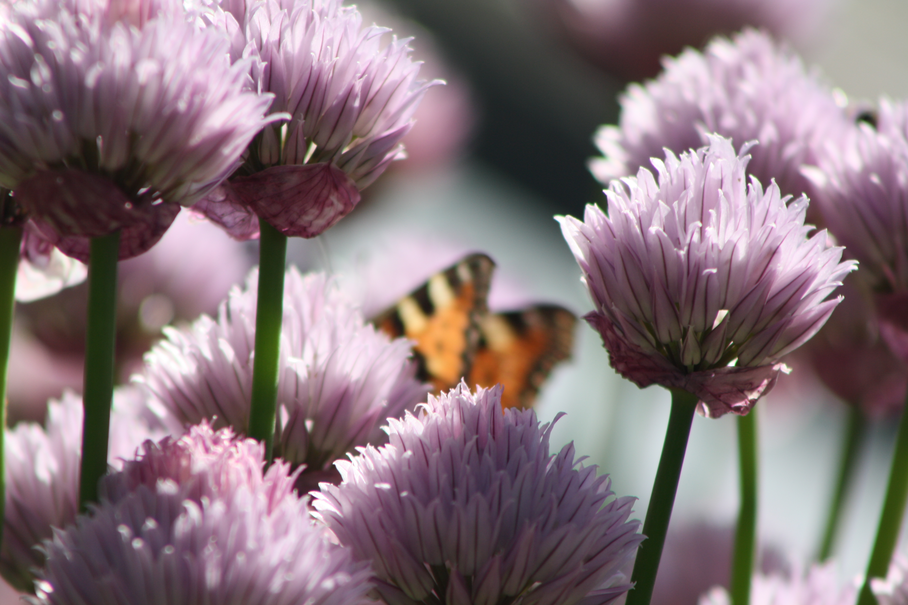
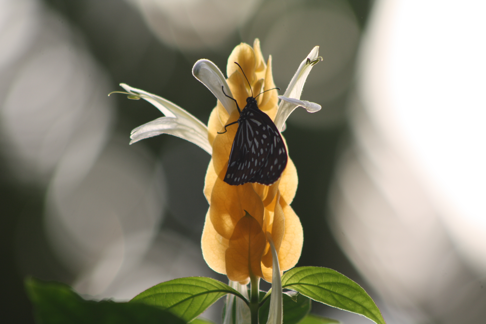
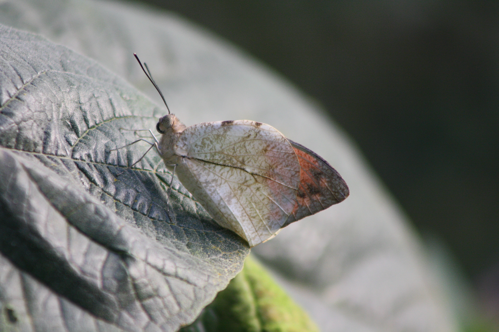
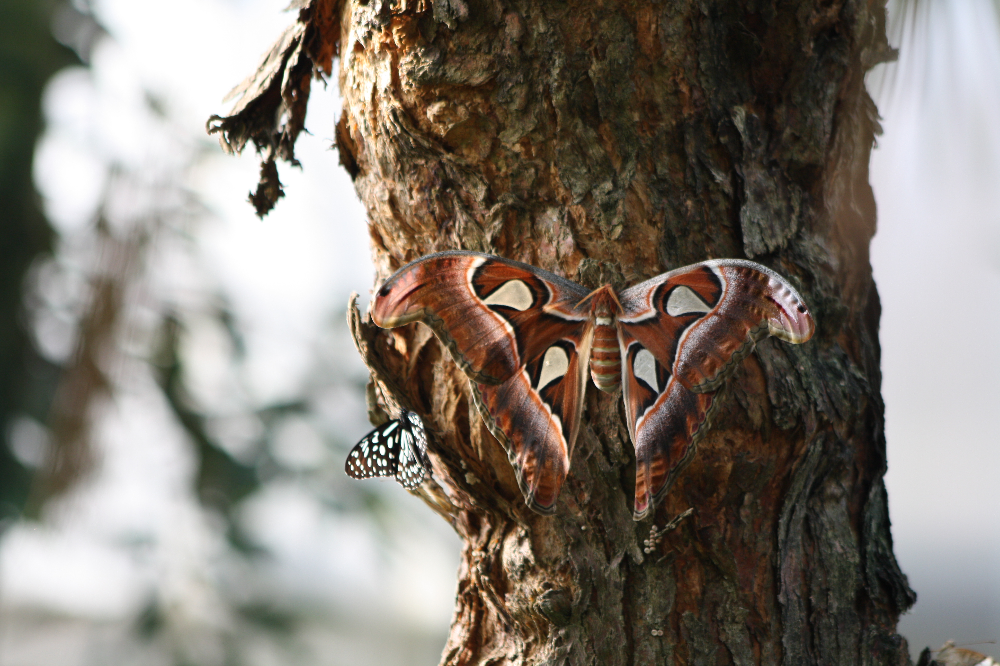